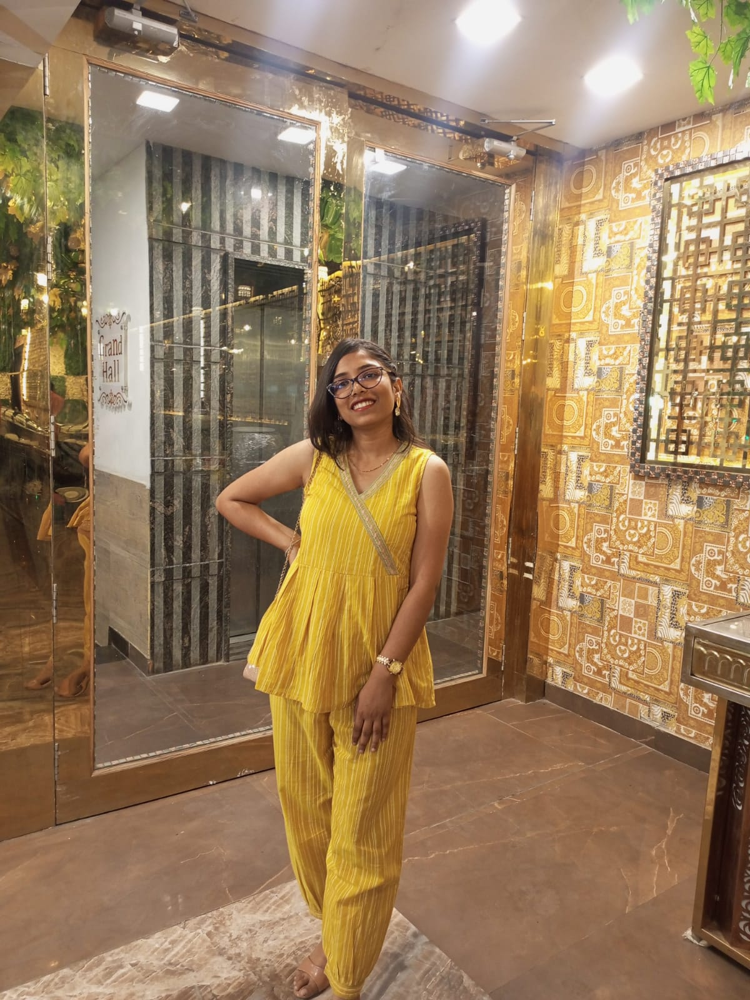

Aastha Gupta

Summary
A self-motivated, hard-working and positive student looking for an internship at Ash
Incorporated. I seek to explore my career options
in the IT sector to build my technical and project management skills.
Education
- Electronics and Communication Engineering| B.Tech. | Mdan Mohan Malaviya University Of Technology | Grade:7.67| 2021-2025
- Intermediate | Woodland Acadmey | Percentage: 80.2% | 2020
- High School | G.N. National Public School | Percentage: 91.6% | 2018
Work Experience
Skills
- Languages : C++, HTML, CSS, Javascript, SQL
- Technologies/ Framework/ Libraries: ReactJS, NodeJS, MongoDB, Bootstrap, JQuery, Rest API, Git
- Core Subjects: OOPs, Operating System, Computer Nteworking, Database Management System
Responsibilities
ECES | Alumini Relation Head
Contact me